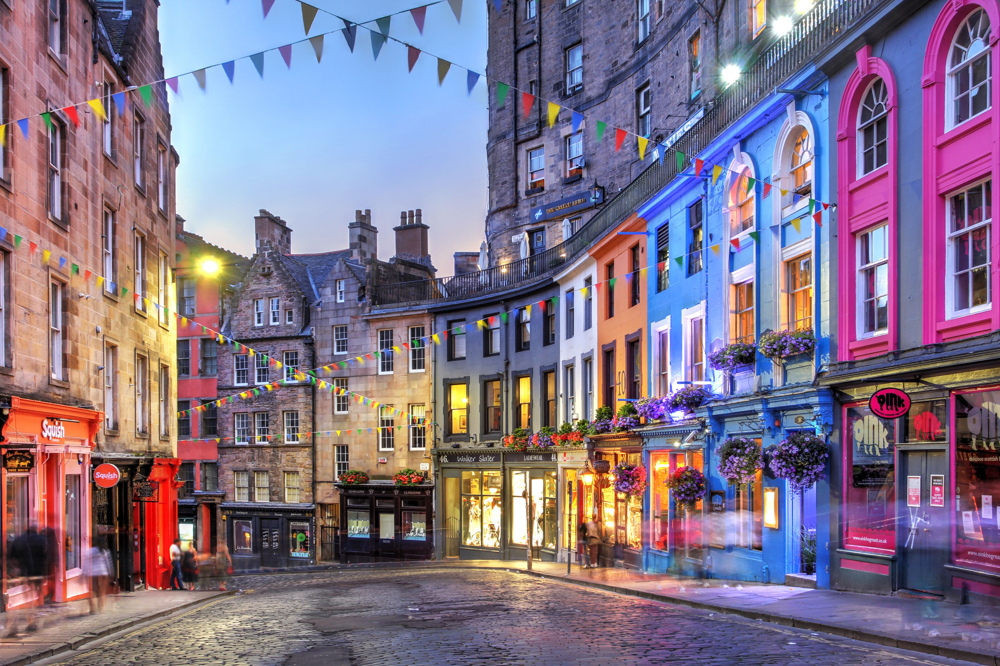

Grassmarket
A historic square with pubs and cafes.
The Wizarding Wanderer

Victoria Street is a curved, cobbled street with colorful shops. Many fans say it inspired Diagon Alley.
A historic square with pubs and cafes.
An old churchyard that fans link to names in the books.
The castle on the hill above the city.
More ideas: VisitScotland.